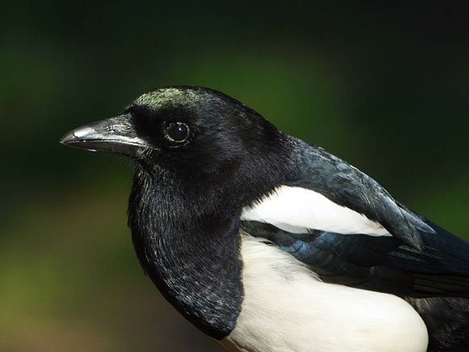

Le pie bavarde
La pie possède une très longue queue, parfois en éventail et un plumage noir et blanc éclatant, composé de subtiles nuances de vert et de pourpre et un bec puissant.
La pie possède une très longue queue, parfois en éventail et un plumage noir et blanc éclatant, composé de subtiles nuances de vert et de pourpre et un bec puissant.
La réputation de voler les objets brillants et son habitude à dévorer les œufs et les poussins d'espèces plus petites fait que la pie est souvent considérée comme un hôte indésirable dans les jardins. Mais elle n'est pourtant pas la seule à se comporter ainsi et avant de condamner la pie pour son pillage de nid d'autres espèces, il faut savoir que le chat domestique fait beaucoup plus de ravages dans les populations d'oiseaux et qu'on a même vu des mésanges et des merles en faire autant? De plus, son propre nid est souvent pillé par les corneilles. Son impact sur la population de passereaux est nettement moins grand qu'on ne le croit.
La pie est un bel oiseau, doué d'une certaine intelligence. Les pies sont très vigilantes et craintives. Son cri résonne loin, répété et il est souvent employé pour donner l'alarme en signalant souvent la présence des chats, de rapaces ou d'autres carnivores prédateurs. Elles ne visitent les mangeoires que lorsqu'elles ne sont pas dérangées. Elles marchent au sol en sautillant. Leur nid sphérique surmonté d'un dôme est facilement repérable et reconnaissable. La pie a un vol faible mais sa queue extensible lui permet d'utiles acrobaties en cas d'agression. La pie se nourrit sur le sol et dans les haies où elle capture des insectes, des petits mammifères et des oiseaux.
Très sociables, les pies vivent toute l'année en couple ou en petits groupes. Les nouveaux couples de pies essaient de s'installer dans un territoire, mais les propriétaires s'efforcent de les chasser. Des jacassements bruyants accompagnent les bagarres que font naître ces rivalités. La population des pies a connu une augmentation spectaculaire ces dernières années, probablement parce qu'on ne les chasse plus. Comme les autres membres de la famille des corvidés, la pie bavarde a appris à vivre en compagnie des hommes, tout en restant sur ses gardes et ne tolérant pas une approche trop décidée.
Visiteur commun des jardins et des parcs, la pie vit en plaine, dans les campagnes ouvertes et arborées, les bocages, les zones urbaines et suburbaines avec des haies, des buissons et des grands arbres. Son habitat est souvent proche des habitations dans les villes et les villages; elle évite les forêts touffues.